Reactivas: se atienden y controlan incidentes y accidentes que ya ocurrieron.
Te damos algunas recomendaciones que te ayudarán a desarrollar esta experiencia:

Ten presente la duración del curso y programa tus espacios de estudio.

Busca un lugar tranquilo para estudiar y evita las distracciones, esto te ayudará con tus niveles de concentración.

Te sugerimos hacer uso de audífonos.

Este curso cuenta con sistema closed caption. Lo puedes activar en la parte superior derecha de tu pantalla.
Conoce nuestros botones

Cuando encuentres este icono podrás profundizar en las temáticas abordadas.

Menú
Para conocer las temáticas que vas a explorar haz clic aquí.

Ayuda
Si quieres recordar el uso de los botones haz clic aquí.

Logros
Si quieres recordar el uso de los botones haz clic aquí.

Salir
Para salir del curso haz clic aquí.

Si quieres avanzar haz clic aquí.

Para regresar a la pantalla anterior haz clic aquí.
MÓDULO 1 – INTRODUCCIÓN A LA GESTIÓN DE RIESGOS OPERACIONALES

En el día a día es inevitable estar expuesto a riesgos; los cazadores de riesgos han desarrollado la capacidad de identificarlos y prevenirlos, y con este curso tú también podrás lograr hacerlo.
Los cazadores de riesgos utilizan dos modelos conceptuales que les permiten comprender cómo puede materializarse un riesgo y de que forma se pueden implementar barreras o controles para evitar eventos adversos.

Modelo de la deriva práctica
Modelo Shell
Modelo de la deriva práctica
En pocas palabras, es la brecha que hay entre el desempeño ideal y el desempeño real del sistema; esta brecha se da porque los elementos que interactúan en un proceso pueden hacer que este sufra una desviación con relación a lo esperado.
Modelo de la deriva práctica
Modelo Shell
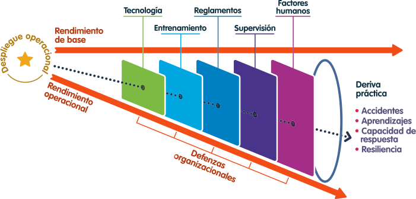
Modelo de la deriva práctica
Modelo Shell
La línea horizontal llamada Rendimiento de base, representa la situación ideal planeada para el desarrollo de cierta situación.
La línea inclinada llamada Rendimiento operacional, representa la situación real de cierta situación luego de que interactúa con todas las variables del proceso, y es inclinada porque la realidad se desvía de lo ideal (o lo planeado) a causa de los múltiples factores involucrados.
Los recuadros de colores llamados Tecnología, Entrenamientos, Reglamentos, Supervisión y Factores humanos, representan las defensas o controles organizacionales, implementados para evitar la materialización de un evento adverso.
Modelo de la deriva práctica
Modelo Shell
La línea punteada en negro representa un evento adverso. El evento adverso tiene un inicio en algún momento del desarrollo de cierta situación entre el rendimiento base y el rendimiento operacional. Cuando la línea punteada logra atravesar todos los controles, decimos que se ha materializado.
Para evitar que esto suceda se acude a las defensas organizacionales; sin embargo, estas no son perfectas y en ellas se pueden encontrar "huecos" o "vacíos" por donde el evento se puede "colar" y materializar.
Modelo de la deriva práctica
Modelo Shell
Este modelo, conocido como deriva práctica, permite a los cazadores de riesgos evaluar los posibles "vacíos" en las barreras con la finalidad de eliminarlos o minimizarlos.
Modelo de la deriva práctica
Modelo Shell
El Modelo Shell nos permite comprender cómo el ser humano interactúa con el soporte físico, el soporte lógico y el entorno, entendiendo cada uno de estos como:
Modelo de la deriva práctica
Modelo Shell
Entorno (Environment)
Corresponde a las condiciones internas y externas del entorno sobre el que se mueve la persona, por ejemplo, la temperatura, la humedad, el resto de las personas.
Modelo de la deriva práctica
Modelo Shell
Soporte físico (Hardware)
Hace referencia a las máquinas, herramientas y sistemas que se utilizan.
Modelo de la deriva práctica
Modelo Shell
Soporte lógico (Software)
Son los recursos no materiales relevantes para la operación; hacen parte todos los software, procedimientos, manuales, guías y, en general, todas aquellas herramientas documentales tendientes a dar soporte a las actividades de un proceso.
Modelo de la deriva práctica
Modelo Shell
Factor humano (Liveware)
Las demás personas con las que se interactúa como parte del proceso.
Modelo de la deriva práctica
Modelo Shell
Se aplica para visualizar las diversas interacciones existentes entre los distintos componentes de un proceso. El modelo se enfoca, principalmente, en la relación del individuo con los demás componentes del proceso.
Además de los dos modelos que presentamos, para los cazadores también es muy importante poder clasificar las acciones con las que se puede hacer frente a los riesgos operacionales:
Reactivas
Proactivas
Predictivas
Además de los dos modelos que presentamos, para los cazadores también es muy importante poder clasificar las acciones con las que se puede hacer frente a los riesgos operacionales:
Reactivas
Proactivas
Predictivas
Proactivas: se modifican los aspectos que pueden contribuir a que un riesgo se materialice.
Además de los dos modelos que presentamos, para los cazadores también es muy importante poder clasificar las acciones con las que se puede hacer frente a los riesgos operacionales:
Recuerda que es deber de todo cazador de riesgos tener en cuenta:
La planeación operacional
La cultura de seguridad
La planeación implica el establecimiento de objetivos operacionales y el señalamiento de los medios para lograrlos.
Recuerda que es deber de todo cazador de riesgos tener en cuenta:
La planeación operacional
La cultura de seguridad
Refleja el sentido de la gestión del riesgo y lo asocia con la conducta de las personas y las organizaciones.
¡Te tengo una buena noticia! A medida que avances en esta experiencia irás recolectando las herramientas necesarias para convertirte en un cazador de riesgos.
Has obtenido las primeras dos.

Modelo Shell

Modelo deriva práctica
MÓDULO 2– CONTEXTO OPERACIONAL

Es de vital importancia el reconocimiento del entorno y los cazadores de riesgos lo saben, por lo que la tercera herramienta que debes obtener es el contexto operacional, que define el entorno físico, ambiental y organizacional de un activo o sistema.
Proceso
Para comprender el contexto operacional, debemos tener en cuenta todos los elementos y condiciones donde el activo estará entregando la demanda solicitada a lo largo de su ciclo de vida.
Por ello, es importante que tengamos clara la noción de "Proceso", que designa las operaciones que se llevan a cabo de manera dinámica, planeada y consecutiva, y que son ampliamente necesarias para concretar la producción de un bien o servicio.

Para el caso del proceso Generar energía, los recursos pueden ser, por ejemplo, agua, combustible o viento; y el producto sería la energía generada.
Ahora que conoces la importancia de los procesos, para obtener tu tercera herramienta, debes conocer los componentes de un proceso específico.
Generación de energía.
Provisión aguas y gestión aguas residuales.
Transmisión y distribución de energía.
Distribución y comercialización gas.
Proceso Generación de energía

Proceso Generación de energía
Almacenamiento (componente 1)
Proceso de aprovisionamiento de un recurso fuente de energía con el objeto de mantenerla en condiciones potenciales, como provisión para la generación de energía.
Proceso Generación de energía
Conducción (componente 2)
Proceso por el cual se transporta un recurso fuente (gas, líquido combustible, agua) en cantidades y condiciones seguras, desde el punto de almacenamiento hasta la planta generadora o punto de conversión.
Proceso Generación de energía
Conversión (componente 3)
Proceso de transformación de la energía potencial disponible en agua, líquido combustible o gas, en energía eléctrica por medio de los generadores o turbinas y los subsistemas o equipos electromecánicos necesarios.
Proceso Generación de energía
Transformación (componente 4)
Proceso por el cual se transfiere energía eléctrica de un circuito a otro a los niveles de tensión y potencia necesarios para su conducción.
Proceso Generación de energía
Terrenos y servidumbres (componente 5)
Corresponde a los terrenos, vías, servidumbres e instalaciones físicas donde se desarrollan actividades de soporte y sostenimiento para los procesos.
PROCESO DE TRANSMISIÓN Y DISTRIBUCIÓN DE ENERGÍA
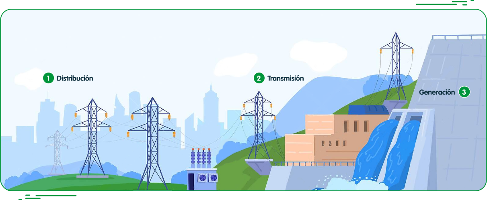
PROCESO DE TRANSMISIÓN Y DISTRIBUCIÓN DE ENERGÍA
Distribución
Es el transporte de energía eléctrica por las redes de subtransmisión (media tensión), circuitos primarios y redes secundarias para llegar a los usuarios finales.
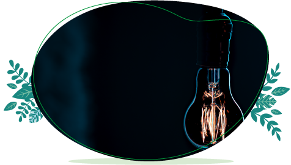
PROCESO DE TRANSMISIÓN Y DISTRIBUCIÓN DE ENERGÍA
Transmisión
Es el servicio de transporte de energía eléctrica por las redes de alta tensión, bien sean torres de sustentación o subterráneas, las cuales van desde las centrales de generación hasta las subestaciones.
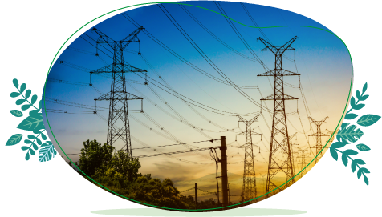
PROCESO DE TRANSMISIÓN Y DISTRIBUCIÓN DE ENERGÍA
Generación
Proceso de obtención de energía eléctrica a partir de la transformación de energías primarias renovables o no renovables, por medio de un generador instalado en una central eléctrica.
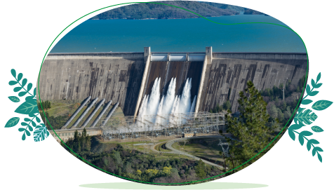
Distribución y comercialización gas
El gas natural seguirá creciendo en producción y demanda por ser un combustible limpio, disponible, competitivo y seguro.

Distribución y comercialización gas
El gas natural seguirá creciendo en producción y demanda por ser un combustible limpio, disponible, competitivo y seguro.
Producción
El gas llega desde La Guajira o Cusiana a través de los gasoductos del sistema de transporte y se distribuye a través de tuberías de acero y polietileno.
Distribución y comercialización gas
El gas natural seguirá creciendo en producción y demanda por ser un combustible limpio, disponible, competitivo y seguro.
Transporte
El transporte se realiza mediante vehículos dotados con módulos de almacenamiento. Estos vehículos cargan el gas en la estación compresora de EPM ubicada en Barbosa, y de allí lo llevan hasta la estación descompresora en las poblaciones.
Distribución y comercialización gas
El gas natural seguirá creciendo en producción y demanda por ser un combustible limpio, disponible, competitivo y seguro.
Distribución y comercialización
Finalmente, el gas es convertido en líquido mediante un proceso de enfriamiento para poder ser distribuido y comercializado.
Proceso de provisión Aguas y Gestión Aguas Residuales
Los componentes de los procesos de Provisión Aguas y Gestión Aguas Residuales son los siguientes:
1. Provisión Aguas
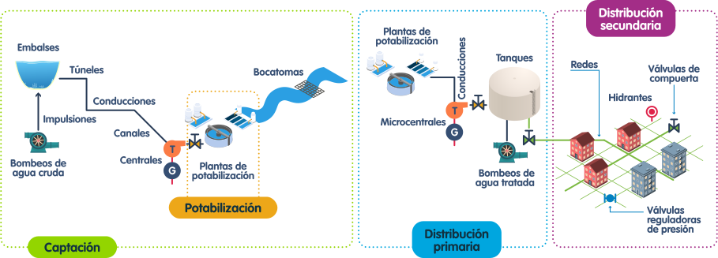
Proceso de provisión Aguas y Gestión Aguas Residuales
Los componentes de los procesos de Provisión Aguas y Gestión Aguas Residuales son los siguientes:
1. Provisión Aguas
Captación:
Proceso mediante el cual se recoge el agua natural proveniente de un embalse o de una fuente superficial, quebrada o río, con el fin de conducirla hacia la planta de potabilización. Para cumplir con este objetivo se cuenta con torres y otras estructuras de captación, conducciones, canales, túneles y bombeos.
Proceso de provisión Aguas y Gestión Aguas Residuales
Los componentes de los procesos de Provisión Aguas y Gestión Aguas Residuales son los siguientes:
1. Provisión Aguas
Potabilización:
Proceso en el cual se recibe el agua natural captada y, mediante la ejecución de acciones físicas (sedimentación y filtración) y químicas (coagulación y desinfección), se transforma el agua recibida en potable, cumpliendo con la normatividad vigente.
Proceso de provisión Aguas y Gestión Aguas Residuales
Los componentes de los procesos de Provisión Aguas y Gestión Aguas Residuales son los siguientes:
1. Provisión Aguas
Distribución primaria:
Mediante el uso de tuberías de gran diámetro, se conduce el agua potabilizada hacia los tanques de almacenamiento dispuestos en diversos puntos del área de prestación de servicio, lista para su distribución a los usuarios.
Proceso de provisión Aguas y Gestión Aguas Residuales
Los componentes de los procesos de Provisión Aguas y Gestión Aguas Residuales son los siguientes:
1. Provisión Aguas
Distribución Secundaria:
Es el proceso con el cual se lleva el agua potable desde los tanques de almacenamiento hacia las instalaciones, para ello se usan extensiones significativas de redes, válvulas, hidrantes y otros elementos, para garantizar la prestación del servicio en las condiciones de calidad y continuidad establecidas en la normatividad.
Proceso de provisión Aguas y Gestión Aguas Residuales
Los componentes de los procesos de Provisión Aguas y Gestión Aguas Residuales son los siguientes:
2. Gestión Aguas Residuales
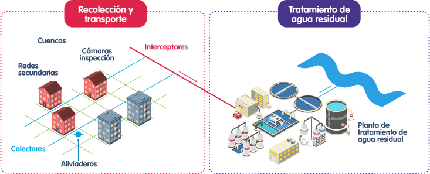
Proceso de provisión Aguas y Gestión Aguas Residuales
Los componentes de los procesos de Provisión Aguas y Gestión Aguas Residuales son los siguientes:
2. Gestión Aguas Residuales
Recolección y transporte aguas residuales:
Proceso con el cual se recogen las aguas residuales o servidas generadas al interior de las instalaciones residenciales, comerciales e industriales, mediante el uso de una red significativa de tuberías y otros elementos como cámaras de inspección y sistemas de alivio. Las aguas residuales recolectadas se conducen a redes de mayor diámetro, denominadas colectores, que a su vez se conectan a otras, también de grandes diámetros, conocidas como interceptores; son estas las que finalmente llevan las aguas residuales a las plantas de tratamiento para su depuración y disposición final.
Proceso de provisión Aguas y Gestión Aguas Residuales
Los componentes de los procesos de Provisión Aguas y Gestión Aguas Residuales son los siguientes:
2. Gestión Aguas Residuales
Tratamiento agua residual:
Proceso físico, químico y biológico, en el cual se remueve la carga contaminante de las aguas residuales, de acuerdo con la normatividad ambiental vigente, para su disposición final a una fuente de agua; en este proceso se generan biosólidos que pueden ser usados en la recuperación de suelos.
¡Felicitaciones! Has obtenido tu tercera herramienta, el contexto operacional.
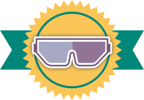
Contexto operacional
MÓDULO 3 - TAXONOMÍA
Vemos una casa construida en la parte baja de una montaña.
En la parte superior observamos una roca quieta, en estado estable. La roca de por sí no genera ningún riesgo, pero sí tiene el potencial para causar la afectación de la casa en caso de rodar cuesta abajo. A eso le llamamos inductor.
Inductor: factor que tiene el potencial de generar un riesgo para la instalación1. Es de carácter pasivo, ya que el inductor sin la presencia del causal no genera ningún riesgo.
En determinado momento, por las fuerzas de la naturaleza (un temblor), la roca se pone en movimiento, descendiendo por la montaña y dirigiéndose hacia la casa. Al temblor, que puso en movimiento a la roca, se le llama causal, el causal es el que “activa” el inductor.
Causal: acción, circunstancia, motivo u origen de algo. Es de carácter activo.
De la casa, podemos decir que es vulnerable a la caída de la roca, ya que está expuesta en la trayectoria.
Y el riesgo es la interacción de todos los factores anteriormente explicados.
Vulnerabilidad: debilidad o grado de exposición de la instalación a la materialización de un riesgo2.
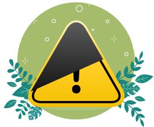
Actividad de aprendizaje
Has recorrido un largo camino para llegar hasta aquí, y has obtenido algunas herramientas y conocimientos fundamentales para ser un cazador de riesgos.
¡Vamos a ponerlas en práctica! ¡Necesitamos tu ayuda para cazar algunos riesgos! ¿Estás listo?
Observa la imagen y caza los 5 riesgos que encuentres haciendo clic sobre ellos.
Donde:
El riesgo: caída a un mismo nivel a causa de un piso resbaloso.
El inductor: canecas con material radioactivo posicionadas en un pasillo de tránsito de personas.
El causal: una persona tumbó una de las canecas y se derramó su contenido.
La vulnerabilidad: una persona transitando por el pasillo descuidada.
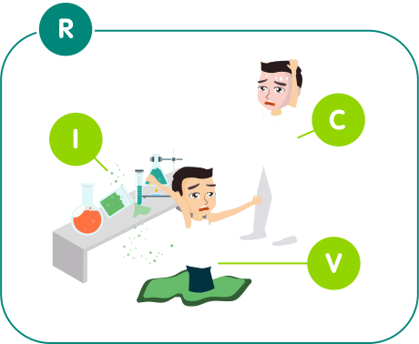
Donde:
El riesgo: atrapamiento en máquina rotativa.
El inductor: maquinaria rotativa.
El causal: quitar la guarda de protección del elemento rotativo.
La vulnerabilidad: una persona con indumentaria que puede sufrir atrapamiento.
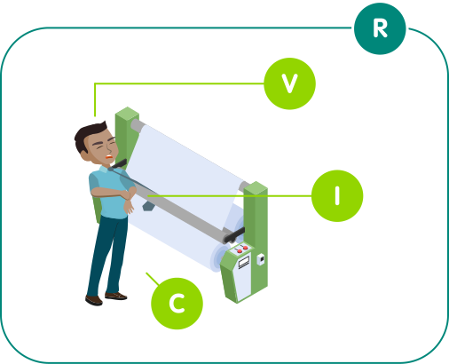
Donde:
El riesgo: golpe en un dedo.
El inductor: el martillo.
El causal: una persona que mientras trabaja está distraída por causas externas.
La vulnerabilidad: el dedo que sostiene el clavo.
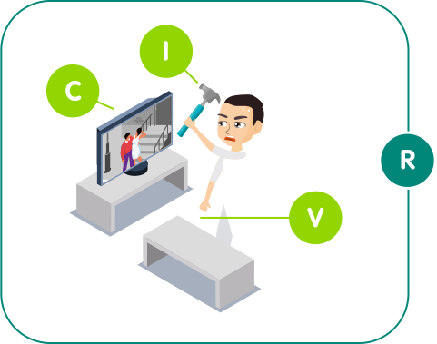
Donde:
El riesgo: caída a un mismo nivel.
El inductor: una persona utilizando una máquina de limpieza del suelo.
El causal: el cable de conexión eléctrico dispuesto por el suelo.
La vulnerabilidad: una persona distraída sin la suficiente advertencia de que en el piso hay obstáculos.
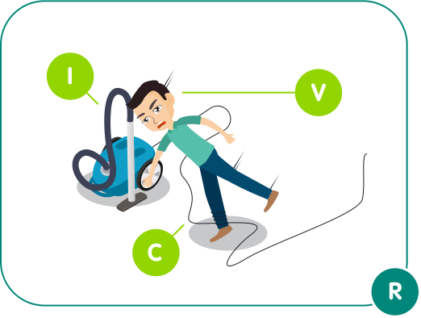
Donde:
El riesgo: caída de objetos a diferente nivel.
El inductor: un montículo de ladrillos ubicados en un segundo piso.
El causal: una persona que tumba el montículo de ladrillos.
La vulnerabilidad: una persona que no usa casco pasando en el mismo instante de la caída de los ladrillos.
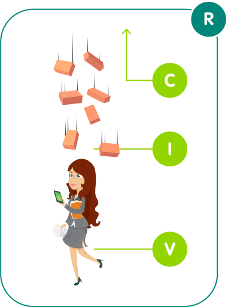
Desde la Dirección Ingeniería de Riesgos, se clasificaron los inductores o causales en los siguientes tres grandes grupos de origen:
ANTRÓPICO
NATURAL
TECNOLÓGICO
Todo aquello que tiene que ver con los seres humanos.
Desde la Dirección Ingeniería de Riesgos, se clasificaron los inductores o causales en los siguientes tres grandes grupos de origen:
ANTRÓPICO
NATURAL
TECNOLÓGICO
Que tiene relación con la naturaleza o que es producido por ella.
Desde la Dirección Ingeniería de Riesgos, se clasificaron los inductores o causales en los siguientes tres grandes grupos de origen:
ANTRÓPICO
NATURAL
TECNOLÓGICO
Lo relacionado con los equipos.
En EPM, se han identificado 45 inductores o causales que se revisan, por lo menos, cada año.
Para conocer acerca de los 45 inductores identificados, puedes consultar el documento: Identificación de inductores
Categorías
Origen antrópico
Origen natural
Origen Tecnológico
- Laborales
- Orden público
- Personas
- Procesos
- Sociopolíticos
- Biológico
- Fauna
- Geofísicos
Fallas, daños o escapes
¡Felicitaciones! Has obtenido tu cuarta herramienta, la taxonomía.

Taxonomía
Actividad de evaluación
Ahora solo falta que revisemos qué tanto aprendiste con este curso. Así podrás conseguir tu última herramienta ¡Y contar con todos los elementos para cazar riesgos!
M1
¿De qué forma se clasifican las acciones para hacer frente a los riesgos operacionales? Para darle respuesta a esta pregunta relaciona el concepto con su definición.
Atienden y controlan eventos que ya ocurrieron.
Modifican aspectos que pueden contribuir a que un riesgo se materialice.
Identifican riesgos potenciales antes de que se produzcan.
M2
¿Cuáles son los componentes de cada proceso estudiado en este curso?
Para darle respuesta a esta pregunta relaciona el proceso con sus componentes.
Almacenamiento, Conducción, Conversión, Transformación y Terrenos y servidumbres
Producción, Transporte y Distribución y comercialización
Captación, Potabilización, Distribución. Recolección y Transporte y Tratamiento
Distribución, Transmisión y Generación
M3
¿Cuáles son los grupos de origen de los riesgos?
Para darle respuesta a esta pregunta relaciona el grupo de origen con su definición.
Tiene que ver con los seres humanos.
Tiene relación con la naturaleza o lo que es producido por ella.
Relacionado con los equipos.
¡Actividad finalizada!
¡Qué bien! has conseguido terminar la primera parte, pero aún debes conseguir alguna herramientas ¡Continua en la segunda parte y obten todas las herramientas necesarias!
¡Felicitaciones!